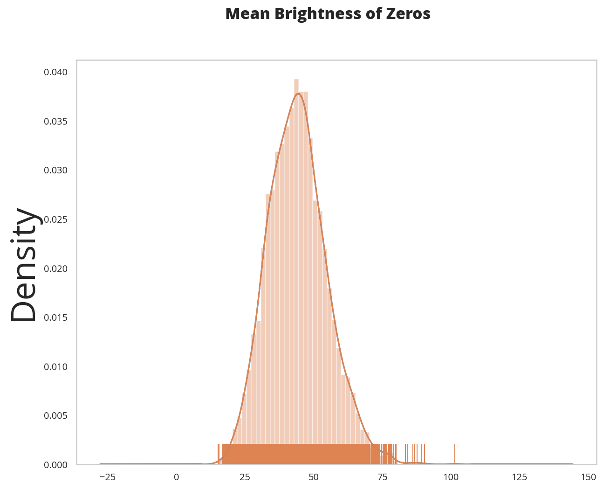
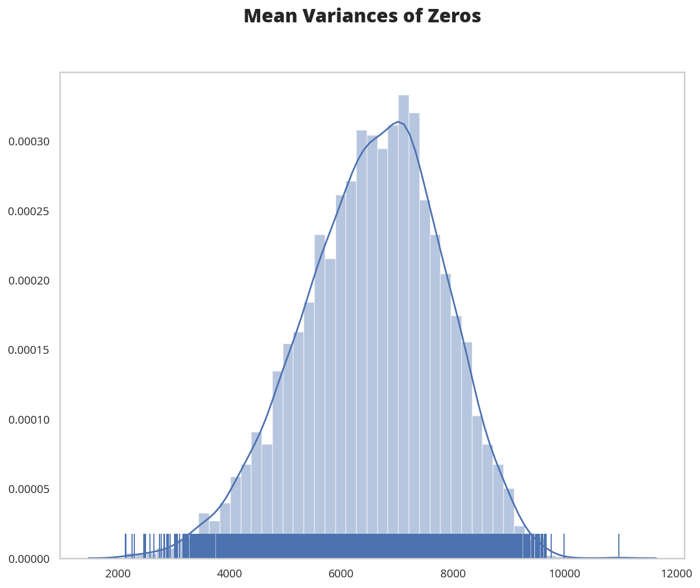

Loading the Zeros and Ones
Table of Contents
Beginning
This is the beginning of the CSE 575 Statistical Machine Learning Class project. The first part is Density Estimation and Classification and will characterize a subset of the MNIST dataset of handwritten digits which only contains the zeros and ones (0 and 1). This first post will just make sure that we can load the data.
Imports
From python's Standard Library
from argparse import Namespace
from pathlib import Path
import os
import random
From PyPi
from dotenv import load_dotenv
from expects import (
be_true,
equal,
expect
)
from PIL import Image
from pytest import approx as around
import hvplot.pandas
import matplotlib.pyplot as pyplot
import pandas
import seaborn
import scipy.io
Set Up
The Environment
Environment = Namespace(
raw="RAW_DATA",
train_images="TRAIN_IMAGES",
train_labels="TRAIN_LABELS",
test_images="TEST_IMAGES",
test_labels="TEST_LABELS",
)
Load the Environment
load_dotenv(override=True)
ENVIRONMENT = os.environ
RAW_PATH = Path(ENVIRONMENT[Environment.raw]).expanduser()
assert RAW_PATH.is_dir()
Plotting
SLUG = "loading-the-zeros-and-ones"
PLOT_PATH = Path(f"../files/notebooks/{SLUG}")
get_ipython().run_line_magic('matplotlib', 'inline')
get_ipython().run_line_magic('config', "InlineBackend.figure_format = 'retina'")
seaborn.set(style="whitegrid",
rc={"axes.grid": False,
"xtick.labelsize": 10,
"ytick.labelsize": 10,
"font.size": 14,
"font.family": ["sans-serif"],
"font.sans-serif": ["Open Sans", "Latin Modern Sans", "Lato"],
"figure.figsize": (10, 8)},
font_scale=3)
Middle
We are going to need to find the distributions for each digits' image using the training data. The images are separated by digit, training or testing, and image or label. It seems unnecessary to have labels given that the image files are already labeled, but perhaps this is a convenience for some.
Load the Zeros
ZERO_TRAIN_IMAGES_PATH = Path(ENVIRONMENT[Environment.train_images].format(0)).expanduser()
ZERO_TRAIN_LABELS_PATH = Path(ENVIRONMENT[Environment.train_labels].format(0)).expanduser()
ZERO_TEST_IMAGES_PATH = Path(ENVIRONMENT[Environment.test_images].format(0)).expanduser()
ZERO_TEST_LABELS_PATH = Path(ENVIRONMENT[Environment.test_labels].format(0)).expanduser()
assert ZERO_TRAIN_IMAGES_PATH.is_file()
assert ZERO_TRAIN_LABELS_PATH.is_file()
assert ZERO_TEST_IMAGES_PATH.is_file()
assert ZERO_TEST_LABELS_PATH.is_file()
ZERO_TRAIN_IMAGES = scipy.io.loadmat(ZERO_TRAIN_IMAGES_PATH)
ZERO_TRAIN_LABELS = scipy.io.loadmat(ZERO_TRAIN_LABELS_PATH)
ZERO_TEST_IMAGES = scipy.io.loadmat(ZERO_TEST_IMAGES_PATH)
ZERO_TEST_LABELS = scipy.io.loadmat(ZERO_TEST_LABELS_PATH)
print(type(ZERO_TRAIN_IMAGES))
print(type(ZERO_TRAIN_LABELS))
print(type(ZERO_TEST_IMAGES))
print(type(ZERO_TEST_LABELS))
<class 'dict'> <class 'dict'> <class 'dict'> <class 'dict'>
print(ZERO_TRAIN_IMAGES.keys())
print(ZERO_TRAIN_LABELS.keys())
dict_keys(['__header__', '__version__', '__globals__', 'target_img']) dict_keys(['__header__', '__version__', '__globals__', 'target_label'])
DataKeys = Namespace(
images = "target_img",
labels = "target_label",
)
for key in ZERO_TRAIN_IMAGES:
if key.startswith("_"):
print(ZERO_TRAIN_IMAGES[key])
b'MATLAB 5.0 MAT-file, Platform: PCWIN64, Created on: Fri Jul 05 12:26:06 2019' 1.0 []
print(ZERO_TRAIN_IMAGES[DataKeys.images].shape)
(28, 28, 5923)
According to the document provided by ASU, there are 5,923 images of zeros in the training set, so it looks like the first two dimensions are the images and the third is the samples.
path = PLOT_PATH/"zero_sample.png"
image = Image.fromarray(ZERO_TRAIN_IMAGES[DataKeys.images][:, :, 0])
image.save(path)
Here's a sample zero image.
print(set(ZERO_TRAIN_LABELS[DataKeys.labels].flatten()))
print(set(ZERO_TEST_LABELS[DataKeys.labels].flatten()))
{0}
{0}
It looks like the labels aren't really useful here.
Flattening
PIXELS = 28 * 28
ZERO_IMAGES = ZERO_TRAIN_IMAGES[DataKeys.images]
SAMPLES = ZERO_IMAGES.shape[-1]
SAMPLE_INDEX = random.randrange(SAMPLES)
SAMPLE = ZERO_IMAGES[:, :, SAMPLE_INDEX]
ZERO_TRAIN = ZERO_IMAGES.flatten().reshape(PIXELS, SAMPLES).T
expect(all(SAMPLE.flatten() == ZERO_TRAIN[SAMPLE_INDEX])).to(be_true)
print(ZERO_TRAIN.shape)
ZERO_FRAME = pandas.DataFrame(ZERO_TRAIN)
(5923, 784)
means = ZERO_FRAME.mean(axis="columns")
figure, axe = pyplot.subplots()
plot = means.plot.kde()
figure.suptitle("Mean Brightness of Zeros", weight="bold")
seaborn.distplot(means, rug=True, ax=axe)
# figure.savefig(PLOT_PATH/"mean_zeros_distribution.png")

expect(SAMPLE.mean()).to(equal(means.iloc[SAMPLE_INDEX]))
The Variances
Besides getting the mean brightness for each image we need the mean row-variance for each image.
accumulator = 0
for row in range(len(SAMPLE)):
accumulator += SAMPLE[row].var()
SAMPLE_VARIANCE = accumulator/len(SAMPLE)
ZERO_VARIANCES = ZERO_IMAGES.var(axis=1).mean(axis=0)
expect(SAMPLE_VARIANCE).to(equal(around(ZERO_VARIANCES[SAMPLE_INDEX])))
figure, axe = pyplot.subplots()
#plot = ZERO_VARIANCES.plot.kde()
figure.suptitle("Mean Variances of Zeros", weight="bold")
seaborn.distplot(ZERO_VARIANCES, rug=True, ax=axe)
